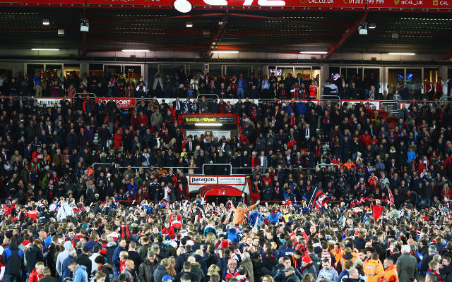

Whistle FC Chairman Oliver Wilkinson has issued the following message to supporters following the departure of Johannes Hoff Thorup and his staff.
“Firstly, I would like to thank Johannes Hoff Thorup, Glenn Riddersholm and Joe Schulberg for everything they have contributed during their time at Whistle Football Club.
“Reaching the latter stages of the promotion race in our second season back in League One and lifting the Vertu Trophy at Wembley are achievements everybody connected with this football club can be proud of.”
“I understand supporters will naturally feel disappointed and uncertain whenever a successful head coach departs, particularly after a season that gave us so many memorable moments.
“But football clubs must always make decisions with the long term in mind.”

“Fourteen years ago, this football club had no future.
“Today, we are preparing for a third consecutive season in League One, operating with a clear structure, a growing supporter base, an expanding stadium project and one of the strongest academy systems at our level.
“That progress has only been possible because of the unity between our supporters, staff, players and community.”
“The next appointment is one of the most important decisions we have made since returning to the Football League.
“Our objective is not simply to appoint a coach for the next twelve months, but to identify somebody who can grow alongside this football club and help lead the next phase of the Whistle project.
“We are looking for a progressive, ambitious and modern head coach who believes in developing players, embracing innovation and building a clear football identity.”
“The support this season has been exceptional.
“Wembley was another reminder of what this football club can become when everybody pulls together. The connection between this team and the supporters is one of the strongest foundations we have moving forward.”
“This summer marks another important step in our journey.
“We move forward together.”
The process of appointing a new Head Coach is ongoing and further updates will be communicated in due course.